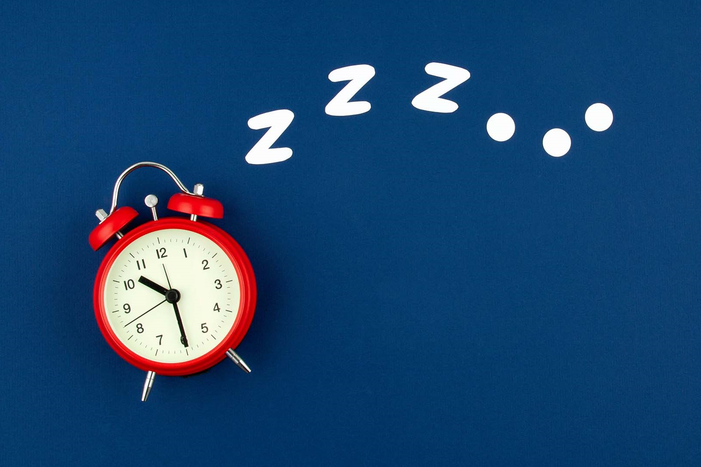

Sleep deprivation can leave you feeling irritable and
exhausted in the short-term, but it can also have serious
long-term health consequences as well.Lack of sleep is linked to a
number of unfavorable health consequences including heart disease,
type 2 diabetes, and depression. Research suggests that the relationship between sleep and mental
health is complex. While sleep has long been known to be a consequence
of many psychiatric conditions, more recent views suggest that sleep
can also play a causal role in both the development and maintenance of
different mental health problems. In other words, sleep problems can lead to changes in mental health, but mental
health conditions can also worsen problems with sleep.
"
If lifestyle changes do not relieve sleep problems,
your doctor may recommend psychotherapy and medications.
"
The recommendations for treating poor sleep or sleep disturbances are generally
the same whether or not you have a psychiatric condition. Preliminary approaches
usually focus on lifestyle changes you can make that can help you get a better
night’s sleep. Avoiding sleep interrupters (such as caffeine, nicotine, and alcohol)
and practicing good sleep habits are examples of lifestyle changes you can make that can help.
In addition to seeking help from medical professionals, there are also steps that you can take
on your own to improve your sleep and well-being. Having good sleep hygiene, or practices that
support sleep, are critical to staying rested and avoiding daytime sleepiness.

The negative effects of poor sleep are well-documented, including the profound impact on mental
health and emotional well-being. Poor sleep may often be a symptom or consequence of an existing
psychological condition, but sleep problems are also thought to cause or contribute to the onset
of different mental disorders including depression and anxiety.
For this reason, addressing sleep problems early-on is important to help protect your overall health
and wellness. Making lifestyle changes that promote good sleep can help, but talk to your doctor if
your sleep problems persist. An underlying sleep disorder or a medical condition might be playing a
role in your sleep issues.